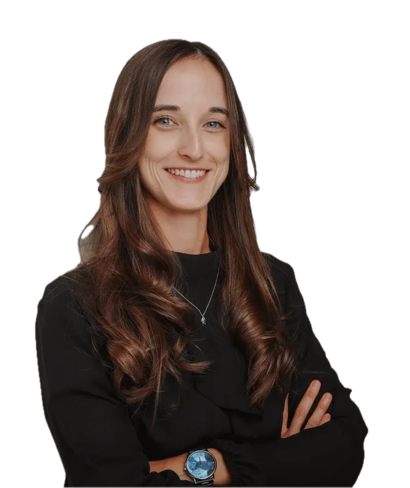

Die Buchhaltung, von der Rechnung bis zum Steuerberater
Rechnungen werden geschrieben, verschickt und nachgehalten. Belege werden gelesen und zugeordnet. Du gibst nur noch frei.
Ich finde die Handarbeit, die sich in deinem Betrieb jeden Tag wiederholt, und sorge dafür, dass sie von allein läuft: Anfragen, Angebote, Rechnungen, Termine.
Kostenloses Erstgespräch buchen
Tippe an, was bei euch vorkommt. Sei ehrlich, es sieht keiner zu.
Tippe an, was auf deinen Betrieb zutrifft.
Darüber im Erstgespräch sprechenJede dieser Aufgaben dauert nur ein paar Minuten. Aber sie kommt jeden Tag wieder. Und zusammen fressen sie deine Woche.
Alles Farbige ist Handarbeit, die sich wiederholt: Mails sortieren, Angebote tippen, Daten übertragen. 30 Stunden, die dir für Kunden fehlen.
Was sich wiederholt, läuft ab jetzt von allein. Deine Kundentermine bleiben.
Mit Raum für die Arbeit, die wirklich zählt. Und für einen Feierabend, der einer ist.
Ein Beispiel zum Nachrechnen: nur das Bearbeiten von Anfragen. Drei Regler, deine Zahlen.
Stunden im Jahr nur fürs Lesen, Eintippen und Antworten. Das sind 7,8 Arbeitswochen und rund 18.720 €, jedes Jahr.
Zum Vergleich: Diesen Ablauf zu automatisieren kostet einmalig 2.900 bis 3.900 € Festpreis. Und du zahlst erst, wenn er läuft.
Kostenloses Erstgespräch buchen Gerechnet nur mit deinen Eingaben, auf 52 Wochen und 40 Stunden je Arbeitswoche. Keine Prognose.Viele denken bei Automatisierung an Kleinigkeiten. Dabei lassen sich ganze Aufgabenbereiche abgeben. Ein paar Beispiele:
Rechnungen werden geschrieben, verschickt und nachgehalten. Belege werden gelesen und zugeordnet. Du gibst nur noch frei.
Jeder Anruf wird angenommen, das Anliegen geklärt, der Termin gebucht. Auch um 22 Uhr und am Sonntag.
Aus deinem Kundengespräch entsteht das fertige Angebot samt Projektplan. Du liest nur noch drüber.
Mails werden sortiert, Standardfragen beantwortet, Wichtiges liegt oben.
Alte Anfragen und stille Kunden werden Schritt für Schritt wieder angesprochen. Du sprichst nur mit denen, die wollen.
Deine Liquidität wird vorausberechnet, alle Kennzahlen laufen an einer Stelle zusammen. Montags liegt der Bericht im Postfach.
Nach jedem Auftrag wird nachgefragt, jede Bewertung bekommt eine passende Antwort.
Abläufe werden dokumentiert, während sie laufen. Fällt jemand aus, geht es trotzdem weiter.
Wiederkehrende Handarbeit ist die teuerste Arbeit im Betrieb. Sie kostet jeden Tag Zeit, bringt keinen neuen Kunden und macht niemandem Freude. Ob Handwerksbetrieb, Praxis, Kanzlei, Agentur oder Händler: Automatisieren lohnt sich für dich, wenn …
Anfragen, Rechnungen, Termine, Bestellungen: dieselben Schritte, immer wieder.
Wer Kunden beraten könnte, pflegt stattdessen Tabellen.
Mehr Aufträge sollen nicht automatisch mehr Verwaltung bedeuten.
Dann hängt der Ablauf an einer Person statt am Betrieb.
Und es lohnt sich nicht für jeden. Wenn der Hebel bei dir zu klein ist, sage ich dir das im Erstgespräch.
Ich schaue mir an, wie die Arbeit in deinem Betrieb heute läuft. Was immer wieder gleich abläuft, baue ich so um, dass es von allein passiert, in den Programmen, die ihr schon nutzt. Du und dein Team macht nur noch das, wofür es einen Menschen braucht.
Die Anfrage kommt abends rein und wartet bis zum nächsten Werktag. Anrufe gehen ins Leere, wenn alle im Einsatz sind.
Jede Anfrage bekommt in Minuten eine Antwort mit Terminvorschlag. Anrufe werden angenommen, das Anliegen landet als Vorgang bei dir.
rund um die Uhr erreichbarDann fragt sie dich. Unklare Fälle gehen an einen Menschen, jeder Schritt wird protokolliert, heikle Aktionen laufen nur mit deiner Freigabe.
Die Kennzahlen sind typische Werte aus solchen Projekten. Deine Kennzahl vereinbaren wir vorher. Dein Ablauf ist nicht dabei? Dann sprechen wir drüber, fast alles, was sich wiederholt, lässt sich automatisieren.
30 Minuten, kostenlos. Wir schauen, welcher Ablauf dich am meisten Zeit kostet und ob sich der Aufwand für dich lohnt. Wenn nicht, sage ich es dir.
Wir nehmen den Ausgangswert an echten Fällen auf und vereinbaren die Kennzahl, an der du das Ergebnis messen kannst.
Die Lösung entsteht in dem, was du schon nutzt. Kein Systemwechsel, keine Schulung für dein Team.
Test mit echten Fällen, Einweisung, Dokumentation. Die Rechnung kommt erst, wenn es läuft.
Drei Stufen, je nachdem, wo du stehst. Für alle gilt: Festpreis, keine Vorkasse, und das Risiko liegt bei mir.
Du weißt, was nervt
Du sagst mir, welche Aufgabe von allein laufen soll. In 4 Wochen läuft sie.
Zum Beispiel: Alte Kontakte zurückholen 2.900 €, Anrufe annehmen, wenn niemand kann 3.900 €.
Du weißt nur, dass Zeit verloren geht
Acht Wochen, gemeinsam mit deinem Team. Am Ende nutzt es die Lösung selbst.
Du willst einen ganzen Bereich abgeben
Drei Systeme als eine Strecke, von der ersten Anfrage bis zum Auftrag. In 12 Wochen steht alles.
Ich arbeite an höchstens zwei Projekten gleichzeitig. Startplätze sind deshalb begrenzt.
Kostenloses Erstgespräch buchenWas in jeder Stufe dabei ist, wie du zahlst und was die Alternativen kosten
Ich bin Alina und komme aus der Industrieautomation. Ich baue Abläufe wie Anlagen: erst messen, dann umbauen, dann mit echten Fällen testen. Vor allem anderen stelle ich eine Frage: Wo verlierst du gerade Zeit, Geld und Nerven?
Unternehmen sollten Menschen nicht auslaugen, sondern sie von unnötiger Arbeit befreien. Damit mehr Raum für die Arbeit bleibt, die wirklich zählt.
Ich schaue mir an, welche Aufgaben in deinem Betrieb immer wieder gleich ablaufen, zum Beispiel Anfragen beantworten, Angebote schreiben, Rechnungen verschicken oder Daten übertragen. Diese Aufgaben baue ich so um, dass sie von allein laufen, in den Programmen, die ihr schon nutzt.
Die Umsetzung einer Idee kostet einen Festpreis zwischen 2.900 und 3.900 €, je nach Umfang, und läuft nach 4 Wochen. Das 8-Wochen-Programm kostet 6.000 € in zwei Raten. Das Vertriebspaket kostet 9.900 € einmalig plus 1.790 € im Monat und steht nach 12 Wochen. Die Betreuung danach ist optional und liegt je nach System zwischen 490 und 990 € im Monat, monatlich kündbar. Alle Preise gemäß § 19 UStG ohne Umsatzsteuer.
Nichts vorab. Die erste Hälfte wird fällig, wenn das System bei dir live läuft und du erste Ergebnisse siehst. Die zweite Hälfte erst, wenn der Ablauf den Test mit echten Fällen bestanden hat.
Wir vereinbaren vor dem Start eine Kennzahl, zum Beispiel wie viel Zeit der Ablauf danach weniger kosten soll. Wird sie verfehlt, arbeite ich ohne Mehrkosten nach, bis sie erreicht ist. Die zweite Rate wird erst danach fällig.
Wenn du schon weißt, welche Aufgabe von allein laufen soll, ist die Umsetzung der schnellere Weg: nach 4 Wochen läuft sie. Wenn du nur merkst, dass zu viel Zeit verloren geht, aber nicht wo, ist das 8-Wochen-Programm richtig. Im Erstgespräch klären wir das in wenigen Minuten.
Meist ja. Ich binde an, was du schon nutzt: Kundenverwaltung, E-Mail, Kalender, Telefon und Tabellen. Einen Systemwechsel brauchst du nicht.
Ja. Ich arbeite mit Auftragsverarbeitungsverträgen, prüfe jeden eingesetzten Dienst und betreibe die Automatisierung auf Wunsch auf einem Server in Deutschland. Welche Daten wohin fließen, ist dokumentiert.
Nein. Das System läuft im Hintergrund. Dein Team bekommt eine kurze Einweisung, wer wann eingreift, und eine Übersicht der Rollen.
Heikle Schritte laufen nur mit Freigabe, unklare Fälle gehen an einen Menschen. Jeder Schritt wird protokolliert, und bei Fehlern werde ich automatisch alarmiert und behebe sie.
Wähle direkt einen Termin. In 30 Minuten schauen wir gemeinsam drauf. Danach weißt du, was sich für dich lohnt, oder dass es sich nicht lohnt.